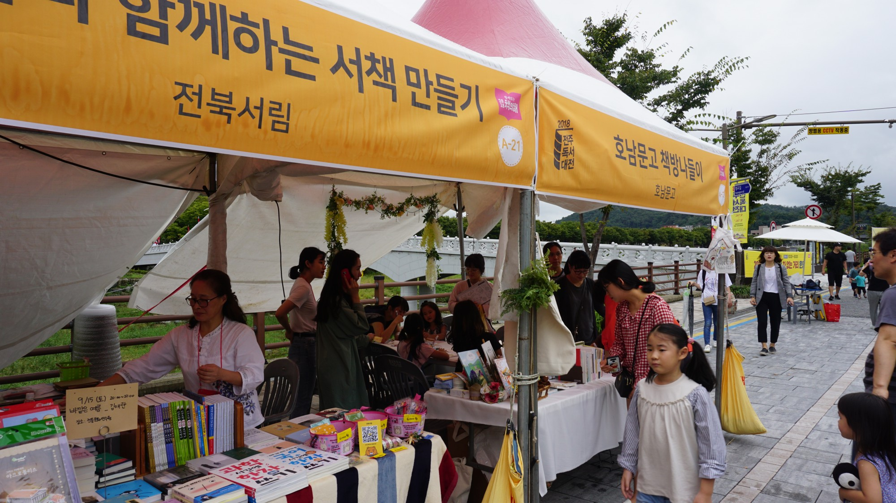
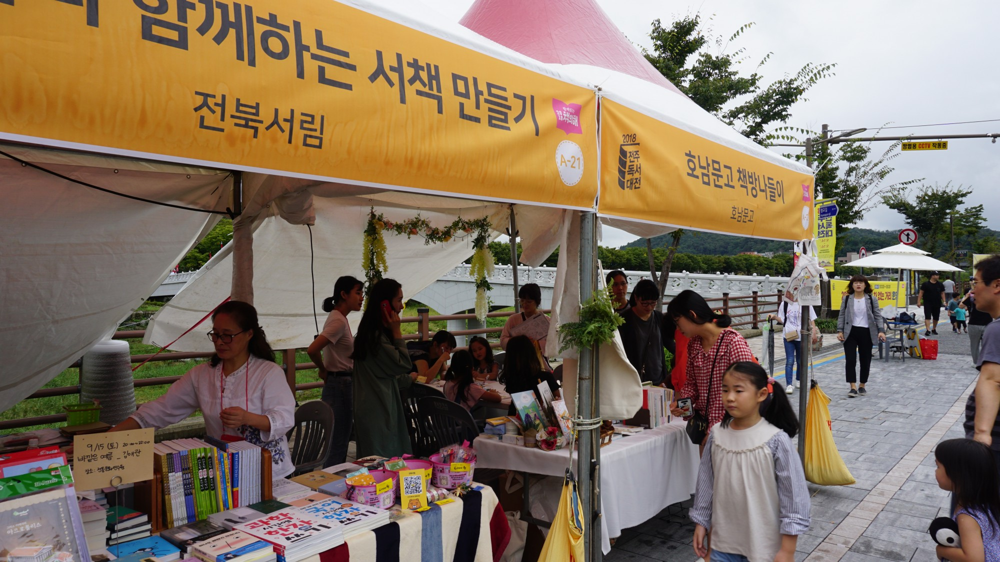

2020 전주독서대전
" 책 읽는 도시 글 쓰는 전주 "
2020. 9. 18.(금) ~ 9. 20.(일)
전주독서대전 올해의 주제는 ‘다독 다독, 당신을 듣겠습니다’입니다. 독서의 끝은 자신의 고유한 세계와 감정을 직접 글로 쓰는 것이고 이것은 또 다른 책 읽기의 기쁨으로 이어집니다. 읽기와 쓰기는 한 몸처럼 연결되어 있습니다. 전주의 여러 도서관에서 상설로 다양한 글쓰기 프로그램(시쓰기, 서평쓰기, 글쓰기 등)을 진행하는 것은 독서의 본질을 꿰뚫는 좋은 기획입니다. 전주독서대전은 독서공동체들이 자발적으로 참여하는 시민 주도형 책 축제라는 특성을 갖고 있습니다. 도서관과 독서 공동체들이 중심이 되어서 독서생태계를 가꾸어 가는 것은 단 며칠의 축제 행사에 그칠 수는 없습니다. 일상을 책과 함께 할 수 있도록 집 앞의 도서관을 더 많이 확충하고 책을 읽는 즐거움을 나누는 다양한 문화마당을 펼쳐나가겠습니다.

- 책으로 떠나는 백이십 년의 시간여행 조선 말 책을 읽어주던 전기수와 전주 부윤일행, 2020년 전주한벽루에 나타나다.
현대판 전기수인 북튜버와 조선 전기수의 입심 대결. 판소리와 랩, 흥겨운 연주가 함께 합니다.
- 국 문학을 대표하는 중견 소설가. 전북 고창 출생.
소설집 '타인에게 말 걸기', '행복한 사람은 시계를 보지 않는다' '다른 모든 눈송이와 아주 비슷하게 생긴 단 하나의 눈송이'
장편소설 '새의 선물', '마지막 춤은 나와 함께', '그것은 꿈이었을까' '마이너리그', '비밀과 거짓말', '소년을 위로해줘', '태연한 인생'
- 어떻게 슬픔은 빛이 되는가 '정혜윤의 읽기와 쓰기'
- 독서에세이 '침대와 책'을 시작으로 '삶을 바꾸는 책 읽기',
'마술라디오' 등 책과 사람에 관한 이야기를 썼다.
전주에서는 매일이 책 축제이지만, 생일잔치처럼 작가와 독자가 즐겁게 만나는 특별한 마당도 펼쳐놓았습니다.
책을 사랑하는 이들이 정겹게 만나는 아름다운 독서축제에 살아있는 이야기의 주인공이신 여러분들을 초대합니다.


- 일시 : '20. 9. 19.(토) 10:00 초청작가 : 장석주&박연준(작가) 주제 : 작가 부부의 '읽는 생활, 쓰는 삶
- 기간 : '20. 9. 18.(금) ~ 9. 20.(일) 강연자 : 정진욱(영화), 장명수(음식), 이재운(역사) 주제 : 전주를 읽어드립니다
- 일시 : '20. 9. 19.(토) 13:00 초청작가 : 강양구(작가) 주제 : 인류는 바이러스를 이길 수 있을까?
- 일시 : '20. 9. 18.(금) 19:00 초청작가 : 최재천(작가) 주제 : 인류의 미래와 생태적 전환